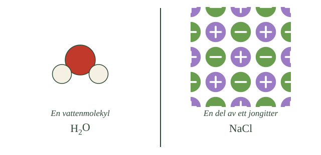
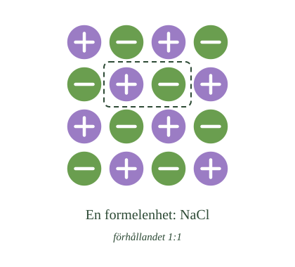

- Ett salt är uppbyggt av joner, inte av molekyler
- Positiva joner kallas katjoner, negativa kallas anjoner
- Attraktionen mellan dem kallas jonbindning
- Salter bildas oftast mellan en metall och en icke-metall
- Koksalt är bara ett av tusentals salter
Du har mött salter flera gånger redan, men nu ska vi titta ordentligt på vad de faktiskt är.
Inte molekyler
De flesta ämnen du arbetat med består av molekyler. Vatten är molekyler, koldioxid är molekyler, syrgas är molekyler.
Ett salt är något annat. Ett salt är uppbyggt av joner — laddade partiklar.
Och det är inte bara koksalt som räknas. Ordet salt betyder inom kemin en hel grupp ämnen, och det finns tusentals av dem. Koksaltet i saltkaret är bara det mest kända.
Två sorters joner
I ett salt finns alltid båda sorterna.
Positiva joner kallas katjoner. De bildas oftast av metaller, som avger en eller flera elektroner. Natriumjonen \(\ce{Na+}\) och kalciumjonen \(\ce{Ca^2+}\) är exempel.
Negativa joner kallas anjoner. De bildas oftast av icke-metaller, som tar upp elektroner. Kloridjonen \(\ce{Cl-}\) och oxidjonen \(\ce{O^2-}\) är exempel.
Du känner igen mönstret från periodiska systemet: metaller till vänster ger bort, icke-metaller till höger tar emot.
Vad som håller ihop dem
Nu kommer det du redan vet från repetitionen: olika laddningar attraherar varandra.
Den positiva jonen och den negativa dras till varandra, och den dragningen är vad vi kallar jonbindning.
Lägg märke till att det inte är någon särskild sorts lim mellan dem. Bindningen är attraktionen mellan laddningarna — samma kraft som fick natrium och klor att hålla ihop i avsnitt 3 av repetitionen.
- Vad är ett salt?
- Hur bildas positiva och negativa joner?
- Vad kallas de två sorterna?
- Vad är jonbindning?
- Vilka atomslag bildar vilken sorts jon?
Salter är uppbyggda av joner, inte av molekyler
Salter är kemiska föreningar som är uppbyggda av joner. De skiljer sig därför från molekylära ämnen som vatten eller koldioxid, där ämnet består av avgränsade partiklar.
I vardagligt tal menar man ofta natriumklorid, NaCl, när man säger salt. Inom kemin är salt ett samlingsnamn för en mycket stor grupp föreningar. Kalciumkarbonat i kalksten, kaliumnitrat i gödselmedel och kopparsulfat är också salter.
Gemensamt för dem alla är att de innehåller positiva och negativa joner som hålls samman av elektriska krafter.
Joner bildas när atomer avger eller tar upp elektroner
En atom är elektriskt neutral när den innehåller lika många protoner som elektroner. Avger eller tar atomen upp elektroner förändras balansen och den blir en jon.
En atom som avger elektroner får fler protoner än elektroner och blir positivt laddad. En sådan jon kallas katjon.
En atom som tar upp elektroner får fler elektroner än protoner och blir negativt laddad. En sådan jon kallas anjon.
Natrium är ett exempel. En natriumatom har elva protoner och elva elektroner. Avger den sin yttersta elektron finns elva protoner kvar men bara tio elektroner, och natriumjonen \(\ce{Na+}\) har bildats. En kloratom kan i stället ta upp en elektron och bilda kloridjonen \(\ce{Cl-}\).
Jonbindning är attraktionen mellan laddningarna
Eftersom joner med olika laddning attraherar varandra dras natriumjonen och kloridjonen mot varandra. Den elektriska attraktionskraften mellan positiva och negativa joner kallas jonbindning.
Jonbindningen är alltså inte en bindning mellan två bestämda partiklar på samma sätt som en kovalent bindning. Den är resultatet av elektriska krafter som verkar mellan många joner samtidigt.
Katjoner bildas oftast av metaller, som har få valenselektroner och lätt avger dem. Anjoner bildas oftast av icke-metaller, som saknar några elektroner för fullt yttersta skal. Det är därför salter vanligen uppstår när en metall reagerar med en icke-metall.
Var går gränsen mot kovalent bindning?
Standardtexten säger att salter bildas mellan metaller och icke-metaller. Det är en användbar regel, men i repetitionsavsnitt 3 såg du att gränsen mellan jonbindning och kovalent bindning är glidande.
Elektronegativitetsskillnaden avgör. Är den mycket stor, som mellan natrium och klor, dras elektronen så långt över att man rimligen kan säga att den bytt ägare. Är den liten delas elektronerna ungefär lika.
Som tumregel brukar man säga att en skillnad över ungefär 1,7 ger en bindning som beter sig som jonbindning. Men det är en konvention, inte en naturlag.
Ämnen som ligger mitt emellan
Några ämnen visar hur oskarp gränsen är.
Aluminiumklorid består av en metall och en icke-metall, så enligt regeln borde det vara ett salt. Men aluminiumjonen har laddningen 3+ och är liten, vilket gör att den drar tillbaka elektroner från kloridjonerna. Resultatet är att aluminiumklorid i vissa former beter sig mer som en molekylförening än som ett salt — den smälter vid låg temperatur och leder ström dåligt.
Zinksulfid är ett annat gränsfall.
Om modellen: att salter bildas mellan metall och icke-metall är en regel som fungerar för nästan alla salter du kommer att möta. Men den beskriver ett utfall, inte en orsak — orsaken är elektronegativitetsskillnaden, och den varierar i steglösa grader.
- Ett salt är inte uppbyggt av enskilda partiklar
- Jonerna sitter i ett regelbundet mönster som kallas jongitter
- Varje positiv jon omges av negativa joner, och tvärtom
- Mönstret fortsätter i alla riktningar
- Ett saltkorn innehåller ofattbart många joner
Nu kommer den svåraste delen i hela avsnittet, och den är värd att läsa långsamt.
Ingen partikel att peka på
När du tänker på vatten tänker du på en molekyl — en syreatom med två väteatomer. Du kan peka på den och säga: det där är en vattenmolekyl.
Med salt går det inte.
I ett saltkorn finns inga enskilda saltpartiklar. Det finns bara joner, ofantligt många, och de sitter i ett regelbundet mönster som fortsätter åt alla håll.
Mönstret kallas ett jongitter.
- Hur många partiklar det finns i den vänstra halvan
- Om du kan räkna partiklarna i den högra
- Vad som händer med jonerna vid bildens kant
- Om de violetta och gröna jonerna ligger slumpmässigt eller i ett mönster

Hur mönstret ser ut
I natriumklorid ligger jonerna som i ett schackmönster, fast i tre dimensioner.
Varje natriumjon omges av sex kloridjoner — en åt vart och ett av kubens sex håll. Och varje kloridjon omges på samma sätt av sex natriumjoner.
Aldrig ligger två positiva bredvid varandra, aldrig två negativa. Det är därför mönstret är så regelbundet.
Hur många?
Talen är svåra att ta in.
Ett saltkorn som knappt syns med blotta ögat innehåller i storleksordningen tusen biljoner joner. Alla sitter på sin plats i samma sammanhängande mönster.
Det är därför man inte kan säga var en "saltpartikel" slutar och nästa börjar. Hela kornet är i någon mening en enda struktur.
Krafterna verkar åt alla håll
Och här är poängen med hela underdelen.
Jonbindningen sitter inte mellan två bestämda joner. Varje jon dras mot alla sina grannar samtidigt, och de dras i sin tur mot sina grannar.
Det är summan av alla dessa krafter som håller ihop kristallen — och det är därför salter är så hårda och har så höga smältpunkter.
- Hur är jonerna ordnade i ett fast salt?
- Vad omger varje jon?
- Finns det enskilda saltpartiklar?
- Hur många joner innehåller ett saltkorn?
- Vad håller ihop kristallen?
Jonerna sitter i ett regelbundet tredimensionellt mönster
Ett fast salt består inte av enskilda molekyler på samma sätt som exempelvis vatten eller koldioxid. I stället är ett mycket stort antal positiva och negativa joner ordnade i ett regelbundet tredimensionellt mönster.
Ett sådant mönster kallas ett jongitter eller en jonkristall.
Mönstret upprepas i alla tre riktningar genom hela kristallen. Det finns ingen naturlig gräns där en enhet slutar och nästa börjar — gittret fortsätter tills kristallen tar slut.
Varje jon omges av joner med motsatt laddning
I jongittret sitter jonerna så att positiva och negativa omväxlar. Varje natriumjon i en kristall av natriumklorid omges av kloridjoner, och varje kloridjon omges av natriumjoner.
I natriumklorid har varje jon sex närmaste grannar, en åt vart och ett av kubens håll. Aldrig ligger två joner med samma laddning intill varandra. Det är den ordningen som gör mönstret så regelbundet.
Hur många grannar varje jon har varierar mellan olika salter, beroende på hur stora jonerna är i förhållande till varandra.
Krafterna verkar åt alla håll samtidigt
Hela kristallen hålls samman av den elektriska attraktionen mellan motsatt laddade joner. Varje jon dras mot alla sina grannar samtidigt, och de i sin tur mot sina.
Det är summan av alla dessa krafter som håller strukturen på plats, och de är sammantaget mycket starka.
Antalen är svåra att föreställa sig. Ett saltkorn som knappt syns med blotta ögat innehåller i storleksordningen tusen biljoner joner, alla på sin bestämda plats i samma sammanhängande gitter.
Det betyder att man inte kan peka ut var en enskild saltpartikel börjar och slutar. Hela kornet är i någon mening en enda sammanhållen struktur.
Gitterenergi
Standardtexten säger att krafterna håller ihop kristallen. Det finns ett mått på hur starkt: den energi som skulle krävas för att slita isär hela gittret till fria joner kallas gitterenergi.
För natriumklorid är den omkring 790 kilojoule per mol. Det är mycket — jämför med en enskild kovalent bindning, som ofta ligger kring 300 till 400.
Gitterenergin beror på två saker. Laddningarnas storlek, eftersom attraktionen växer med dem, och avståndet mellan jonerna, eftersom attraktionen avtar med det.
Magnesiumoxid har dubbla laddningar på båda jonerna och små joner. Dess gitterenergi är omkring 3800 kilojoule per mol, alltså nästan fem gånger natriumkloridens.
Tre egenskaper ur samma sak
Nu faller flera saker på plats samtidigt.
Höga smältpunkter beror på att smältning kräver att jonerna kan röra sig fritt, vilket innebär att gittret måste brytas upp. Natriumklorid smälter vid 801 grader, magnesiumoxid vid 2852 — precis den skillnad gitterenergin förutsäger.
Hårdhet beror på samma sak. Att repa en kristall innebär att förskjuta joner ur sina lägen, och det motverkas av krafterna.
Sprödhet är mer överraskande. Ett salt är hårt men går lätt att slå sönder, och det mötte du i repetitionsavsnitt 3: förskjuts ett lager joner ett steg hamnar lika laddningar bredvid varandra, attraktionen blir repulsion, och kristallen stöts isär av sina egna krafter.
Hårt och sprött samtidigt är alltså inte en motsägelse. Båda följer av att jonerna måste sitta på exakt rätt plats.
Om modellen: standardtexten beskriver gittret som en struktur. Med gitterenergin blir det något mätbart — och tre egenskaper som verkar olika visar sig vara samma sak sedd från tre håll.
- NaCl betyder inte en partikel med två atomer
- Det betyder förhållandet mellan jonslagen
- En natriumjon på varje kloridjon
- Den minsta gruppen som ger rätt förhållande kallas formelenhet
- Salter skrivs alltid med minsta möjliga tal
Nu kommer konsekvensen av det du just läste, och den är den vanligaste missuppfattningen om salter.
Vad NaCl faktiskt betyder
Du har sett formeln NaCl många gånger. Och du har lärt dig att \(\ce{H2O}\) betyder en molekyl med två väteatomer och en syreatom.
Det är därför naturligt att tro att NaCl betyder en partikel med en natriumatom och en kloratom.
Det gör den inte.
I ett saltkorn finns inga NaCl-partiklar. Det finns bara ett gitter av joner. Formeln beskriver något annat: förhållandet mellan jonslagen.
Ett förhållande, inte ett antal
NaCl betyder att det går en natriumjon på varje kloridjon. Ett till ett.
Är det en miljon natriumjoner i kornet finns det en miljon kloridjoner. Är det tusen biljoner finns det tusen biljoner av varje.
Formeln säger ingenting om hur många — bara hur de förhåller sig till varandra.
- Hur många joner som ligger inom den streckade ramen
- Om den ramen sitter runt något som är avgränsat från resten
- Var du skulle kunna rita ramen i stället
- Hur många violetta respektive gröna joner det finns totalt

Kalciumklorid är tydligare
Ta ett annat exempel där förhållandet inte är ett till ett.
Kalciumklorid skrivs \(\ce{CaCl2}\). Kalciumjonen har laddningen plus två, kloridjonen minus ett. För att laddningarna ska ta ut varandra behövs två kloridjoner på varje kalciumjon.
\(\ce{CaCl2}\) betyder alltså: två kloridjoner per kalciumjon. Inte att det finns en partikel med tre atomer.
Ordet för det
Den minsta grupp joner som ger rätt förhållande och en neutral laddning kallas en formelenhet.
En formelenhet är alltså ett bokföringsbegrepp, inte en partikel. Du kan inte plocka ut en ur kristallen och titta på den — du skulle bara riva ut två joner ur ett mönster som fortsätter runt omkring.
- Vad betyder formeln NaCl?
- Finns det NaCl-molekyler?
- Vad är en formelenhet?
- Hur skrivs formeln för kalciumklorid?
- Varför skrivs salter alltid med minsta möjliga tal?
Formeln anger ett förhållande, inte en partikel
Eftersom salter inte består av enskilda molekyler betyder ett salts formel något annat än en molekyls formel.
Formeln NaCl står inte för en NaCl-molekyl bestående av en natriumjon och en kloridjon. Det finns inga sådana partiklar i ett saltkorn.
Formeln visar i stället förhållandet mellan jonerna i kristallen. I natriumklorid finns lika många natriumjoner som kloridjoner, alltså förhållandet 1:1. En natriumjon har laddningen +1 och en kloridjon laddningen −1, vilket gör att laddningarna tillsammans blir noll.
Formelenheten är det minsta förhållandet som ger neutral laddning
För salter använder man därför begreppet formelenhet. En formelenhet visar det minsta heltalsförhållandet mellan de positiva och negativa jonerna som gör saltet elektriskt neutralt.
I NaCl är förhållandet en natriumjon till en kloridjon. I kalciumklorid, \(\ce{CaCl2}\), är förhållandet i stället en kalciumjon till två kloridjoner, eftersom kalciumjonen har laddningen +2 och varje kloridjon −1.
Formelenheten motsvarar alltså ingen fristående partikel i gittret. Den är ett sätt att ange sammansättningen, inte en beskrivning av något man kan plocka ut och titta på.
Salter skrivs alltid med minsta möjliga heltal
Eftersom formeln anger ett förhållande och inte ett antal skrivs den alltid med de minsta tal som fungerar.
Man skriver NaCl, inte \(\ce{Na2Cl2}\), trots att båda beskriver samma förhållande mellan jonslagen.
Här finns en tydlig skillnad mot molekylära ämnen. Väteperoxid skrivs \(\ce{H2O2}\) och inte HO, eftersom molekylen faktiskt innehåller två väteatomer och två syreatomer. Där är talen ett antal i en verklig partikel, och de kan inte förkortas.
Hos salter finns ingen sådan partikel vars innehåll formeln måste beskriva. Därför är minsta möjliga tal alltid det riktiga.
Varför just det förhållandet
Standardtexten säger att formelenheten ger neutral total laddning. Det är hela förklaringen, men den har en konsekvens värd att dra ut.
Eftersom förhållandet bestäms av laddningarna, och laddningarna bestäms av var atomslaget står i periodiska systemet, går det att räkna ut formeln för ett salt man aldrig sett.
Kalium står i grupp 1 och bildar \(\ce{K+}\). Syre bildar \(\ce{O^2-}\). För neutral laddning krävs två kaliumjoner per oxidjon, alltså \(\ce{K2O}\).
Aluminium bildar \(\ce{Al^3+}\), syre \(\ce{O^2-}\). Minsta gemensamma nämnare är sex: två aluminiumjoner ger plus sex, tre oxidjoner ger minus sex. Formeln blir \(\ce{Al2O3}\).
Jämför med molekylformler
Kontrasten mot molekylära ämnen gör skillnaden tydlig.
Väteperoxid har formeln \(\ce{H2O2}\). Skulle man skriva den med minsta möjliga tal blev det HO — men det vore fel, eftersom väteperoxidmolekylen faktiskt innehåller två väteatomer och två syreatomer. Talen är ett antal, inte ett förhållande.
Etan är \(\ce{C2H6}\) av samma skäl, inte \(\ce{CH3}\).
Hos salter finns ingen sådan begränsning. Det finns ingen partikel vars innehåll formeln måste beskriva, så minsta möjliga tal är alltid rätt.
Icke-heltalsförhållanden
En sista sak, som visar att också formelenheten är en modell.
Vissa jonföreningar har inte exakt heltalsförhållanden. Järn(II)oxid skrivs FeO, men verkliga prover har ofta sammansättningar närmare \(\ce{Fe_{0{,}95}O}\) — det saknas järnjoner på vissa gitterplatser, och några av de kvarvarande har laddningen 3+ i stället för 2+ för att kompensera.
Sådana föreningar kallas icke-stökiometriska, och de är vanligare än man skulle tro. De är dessutom tekniskt viktiga, eftersom tomrummen i gittret gör att joner kan röra sig — vilket används i batterier och bränsleceller.
Om modellen: formelenheten är en utmärkt beskrivning av nästan alla salter. Men den förutsätter ett perfekt gitter, och verkliga kristaller har defekter.
Laddar övningskort…
Laddar frågor ...